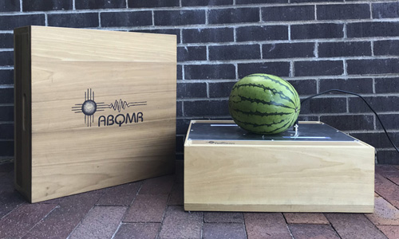
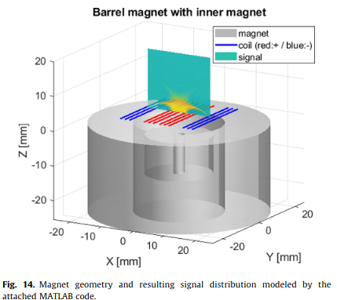
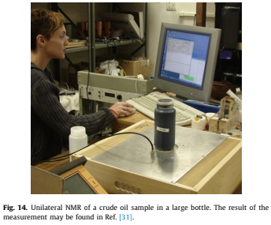
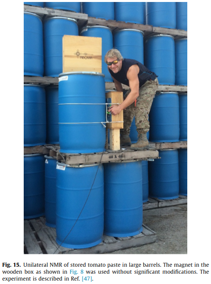

ABQMR holds the patent for this single-sided magnet design. This innovative NMR system was devised to non-invasively acquire NMR relaxation data non-invasively for systems which were too large to fit inside a traditional NMR system. This device was used for several applications in food science including a correlation of T2 relaxation times with sugar content, or ripeness, in watermelon.
The device is comprised of a wooden box with dimensions of 18" x 18" x 12". At the core of the system is the barrel magnet, which sits beneath an RF coil located at the center of the box. The barrel magnet's design is axially magnetized, resembling a hollow right circular cylinder. This configuration generates a magnetic field with a saddle point, creating a sensitive region where NMR experiments can be performed. The sweet spot for these measurements is about 8mm long, axially centered 17mm above the magnet. For the ripeness correlation, this allows the device to probe just inside the rind of the fruit.
One of the significant advantages of the barrel magnet is its capability to measure long T2 components with minimal diffusive attenuation due to magnetic field gradients. This feature is particularly advantageous compared to other unilateral NMR instruments like the MOUSE, which has a large magnetic field gradient designed into the static magnetic field. The barrel magnet's design dictates a set depth of investigation but a larger measurement region.
In addition to measuring the sweetness of watermelons, the Single-Sided Magnet has been employed by the University of California at Davis, Food Science Department, to test the quality of tomato sauce in barrels, specifically to detect rancidity. This application highlights the versatility and practicality of the device in the food industry.
Furthermore, the project's scope includes exploring the theoretical and experimental aspects of the barrel magnet. Detailed studies on the magnet's construction, the design of RF coils, and the experimental methods used to characterize the magnet's performance have been conducted. These studies aim to optimize the magnet's design for various unilateral NMR applications, ensuring reliable and accurate measurements.
Overall, the Single-Sided Magnet project represented a significant advancement in unilateral NMR technology. Its applications in non-invasive fruit quality assessment and food safety testing demonstrate its potential to impact various industries positively. The continued development and refinement of this technology hold promise for broader applications in fields requiring non-destructive testing and quality control.



References:
Figure 14 (plot): S. Utsuzawa, Yiqiao Tang, and Yi-Qiao Song, "Inside-out NMR with two concentric ring magnets" J. Magn. Reson. 333, 107082 (2021).
Figure 14 (photo) & figure 15: S. Utsuzawa and E. Fukushima, "Unilateral NMR with a barrel magnet," J. Magn. Reson. 282, 104-113 (2017).
[31] L. Chavez, S. Altobelli, E. Fukushima, T. Zhang, T. Nedwed, P.D.L. Srnka, H. Thomann, Detecting arctic oil spills with NMR: a feasibility study, Near Surf. Geophys. 13 (2015) 409–416.
[47] M. Pinter, T. Harter, M. McCarthy, M. Augustine, Towards using NMR to screenfor spoiled tomatoes stored in 1000 L, aseptically sealed, metal-lined totes, Sensors 14 (2014) 4167–4176.
S. Utsuzawa and E. Fukushima, "Unilateral NMR with a barrel magnet," J. Magn. Reson. 282, 104-113 (2017).
E. Fukushima, Jasper A. Jackson, Unilateral magnet having a remote uniform field region. U.S.Patent No. 6,489,872; December 3, 2002.